도시계획기사 (2022-03-05 기출문제)
1과목: 도시계획론
1. 20세기 이후에 발표된 도시계획 헌장 중 최초의 도시계획 현장으로 세계 도시계획 및 설계분야의 발전에 많은 영향을 미친 것은?
- 아테네(Athens) 헌장
- 메가리드(Megaride) 헌장
- 마추픽추(Machu-Picchu) 헌장
- 뉴어바니즘(New Urbarnism) 헌장
(정답률: 74%)

2. 케빈 린치(Kevin Lynch)가 그의 저서 ‘The image of the city'를 통해 주장한 도시이미지를 구성하는 5가지 요소가 모두 옳은 것은?
- 도로(Path), 경계(Edge), 결절점(Node), 지구(District), 랜드마크(Landmark)
- 고속도로(Highway), 하천(River), 경계(Edge), 결절점(Node), 지구(District)
- 도로(Path), 경계(Edge), 절점(Node), 건축물(Building), 경관(Streetscape)
- 도로(Path), 경계(Edge), 건축물(Building), 지구(District), 랜드마크(Landmark)
(정답률: 85%)
3. 용도지역 : 지구제에 대한 설명으로 옳지 않은 것은?
- 일종의 토지이용규제 수단이다.
- 토지의 경제적ㆍ효율적 이용과 공공복리 증진을 도모하기 위하여 지정한다.
- 용도지역은 도시계획구역 전체를 대상으로 지정하며 동일한 위치에 중복하여 지정할 수 있다.
- 국토의 계획 및 이용에 관한 법률에서는 용도지역, 용도지구, 용도구역을 두고 있다.
(정답률: 77%)
4. 고대 도시의 도시계획 특성에 관한 설명으로 옳지 않은 것은?
- 메소포타미아의 고대 도시들은 신권통지를 위한 지배 공간으로서 소비의 중심지였다.
- 이집트에서는 새로운 왕이 즉위할 때마다 행정수도를 이전하는 관습이 있었다.
- 고대 그리스 도시는 도시 입구와 신전을 축으로 중간 지점에 아고라를 배치하였다.
- 로마의 도시들은 그리스 도시들보다 소규모의 정방형 형태로 구릉이나 언덕에 형성되었다.
(정답률: 66%)
5. 도시조사에 이용되는 회귀분석모형에 대한 설명으로 옳지 않은 것은?
- 단순회귀분석이란 하나의 종속변수와 하나의 독립변수 사이의 관계를 추정하는 분석이다.
- 다중회귀분석이란 하나의 종속변수와 여러 개의 독립변수 사이의 관계를 추정하는 분석이다.
- 회귀계수는 추정하려는 독립변수의 파라메타를 뜻하며 일반적으로 최소제곱법에 의하여 회귀계수를 추정한다.
- 추정된 회귀선이 표본자료를 얼마나 잘 설명하는가를 나타내는 통계량을 상관계수라고 하며 S2로 표시한다.
(정답률: 62%)
6. 아래의 조건에 따른 밀도별 주거지역의 토지수요 예측 값이 옳은 것은? (단, 목표연도의 예측인구는 200000인이다.)
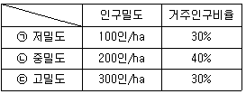
- ㉠ 300ha ㉡ 200ha ㉢ 100ha
- ㉠ 400ha ㉡ 400ha ㉢ 200ha
- ㉠ 600ha ㉡ 300ha ㉢ 100ha
- ㉠ 600ha ㉡ 400ha ㉢ 200ha
(정답률: 62%)
7. 도시ㆍ군계획시설의 민간 투자방식에 대한 설명으로 틀린 것은?
- BOO 방식 : 시설의 준공과 동시에 국가 또는 지방자치단체에게 소유권이 인정되는 방식
- BOT 방식 : 시설의 준공 후 일정 기간동안 사업시행자에게 소유권이 인정되며, 기간 만료 시 국가 또는 지방자치단체에 소유권이 이전되는 방식
- BTO 방식 : 시설의 준공과 동시에 국가 또는 지방자치단체에 소유권이 귀속되며, 사업 시행자에게 일정 기간 시설의 관리운영권을 인정하는 방식
- BLT 방식 : 사업시행자가 시설 준공 후 일정 기간 동안 운영권을 정부에 임대하고 임대 기간 종료 후 시설물을 국가 또는 지방자치단체에 이전하는 방식
(정답률: 66%)
8. 장기미집행 도시ㆍ군계획시설 일몰제에 대한 설명으로 옳지 않은 것은? (단, 지방자치단체의 조례로 정하는 내용은 고려하지 않는다.)
- 사유 재산권을 보호하기 위한 제도이다.
- 2000년 7일 1일 이전에 결정ㆍ고시된 도시계획시설 결정의 실효에 관한 결정ㆍ고시일의 기산일은 2000년 7월 1일이다.
- 매수 의무자가 매수하지 않기로 결정한 토지의 소유자는 건축법령상 제1종근린생활시설로서 5층 이하인 건축물을 설치할 수 있다.
- 도시ㆍ군계획시설결정이 고시된 도시ㆍ군계획시설에 대하여 그 고시일부터 20년이 지날 때까지 그 시설의 설치에 관한 도시ㆍ군계획시설사업이 시행되지 아니하는 경우 그 도시ㆍ군계획시설결정은 그 고시일부터 20년이 되는 날의 다음날에 그 효력을 잃는다.
(정답률: 43%)
9. 도시의 물리적 계획의 3대 요소로 가장 거리가 먼 것은?
- 정보
- 밀도
- 배치
- 동선
(정답률: 76%)
10. 도시화의 과정에서 도시산업의 발달 속도보다 도시인구의 증가 속도가 훨씬 크게 되어 인구적으로만 비대해진 도시화 현상은?
- 가도시화
- 간접도시화
- 종주도시화
- 과잉도시화
(정답률: 70%)
11. 연속적인 경관(Visual Sequence)에서 나타나는 공간과 경관의 의미적 해석에 초점을 맞춰 인간의 지각적 경험을 기준으로 경관분석과 방법론을 제안한 영국 도시경관파의 대표적인 학자는?
- Kevin Lynch
- Gordon Cullen
- Amos Rapoport
- Donald W. Meinig
(정답률: 32%)
12. 도시계획에 활용되는 자료원에 대한 접근방법을 직접적ㆍ간접적이냐에 따라 1차 자료와 2차 자료로 분류할 때 다음 중 2차 자료에 해당하는 것은?
- 통계조사자료
- 현지조사자료
- 면접조사자료
- 설문조사자료
(정답률: 76%)
13. 도시의 경제기반 약화, 인구감소, 고령화 사회 등 경제ㆍ사회적 여건 변화에 대응하여 과거 국토해양부가 제시한 ‘미래도시 비전 2020’에서의 4대 정책목표(4C City)가 아닌 것은?
- 경쟁력(Competitive)있는 활력도시
- 편리한(Convenient) 생활도시
- 조용한(Calm) 전원도시
- 깨끗한(Clean) 녹색도시
(정답률: 73%)
14. 이자 계산 시 복리율 적용방식을 원용한 것으로 단기간에 급속히 팽창하는 신도시의 인구 예측에 유용하나, 안정적 인구변화추세를 나타내는 경우 적용하면 인구의 과도 예측을 초래할 위험이 있는 도시 인구 예측 모형은? (단, Pn : n년 후의 추정인구, P0 : 현재 인구, n : 경과년수, γ : 인구증가율, a, n : 상수, k : 상한인구수)
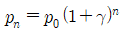
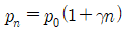
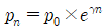
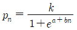
(정답률: 63%)
15. 영국에서 1932년 지자체 행정구역 전역을 대상으로 공간계획을 수립하는 제도를 만든 근거 법령은?
- 도시기본법
- 연방건설법
- 건축법과 건축령
- 도시 및 농촌계획법
(정답률: 57%)
16. 도시계획의 실체적 이론과 절차적 이론에 대한 설명으로 옳지 않은 것은?
- 실체적 이론은 특정 계획분야의 전문 지식에 관한 이론이다.
- 절차적 이론은 계획이 실행되는 환경이나 계획의 대상이 되는 현상을 이해하는데 사용되는 이론이다.
- 팔루디(Faludi)는 실체적 이론과 절차적 이론이 완전히 상호 베타적이지는 않다고 주장하였다.
- 도시계획에서 실체적 이론이란 토지이용계획, 교통계획 등 전문적 지식과 기술을 바탕으로 구체적인 계획안을 생산해 내고 집행하는 일련의 행위과정을 의미한다.
(정답률: 58%)
17. 존 프리드만이 주장한 교류적 계획(Transactive Planning),에 대한 설명으로 옳지 않은 것은?
- 현장 조사나 자료 분석보다는 개인 상호간의 대화를 통한 사회적 학습의 과정을 형성하는데 중점을 둔다.
- 인간의 존엄성에 기초를 두고 있는 신휴머니즘(New Humanism)의 철학적 사고에서 파생하였다.
- 계획의 집행에 직접적으로 영향을 받는 사람들과의 상호 교류와 대화를 통하여 계획을 수립하여야 한다.
- 계획의 직접적 영향을 받는 사람들조차도 무관심한 계획안으로부터 발생할 수 있는 이익을 주민의 관점에서 지지하였다.
(정답률: 62%)
18. 도시의 분류와 관련하여 아래 내용에 해당하는 것은?
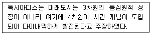
- 대륙도시(Urbanized continent)
- 플러그 인 시티(Plug-in city)
- 움직이는 도시(Walking city)
- 다이나폴리스(Dynapolis)
(정답률: 73%)
19. 교통존(Traffic Zone)의 설정기준으로 옳지 않은 것은?
- 행정구역과 가급적 일치시킨다.
- 동질적인 토지 이용이 포함되도록 한다.
- 간선도로는 가급적 존 경계와 일치시킨다.
- 가능한 다양한 통행 특성을 가진 지역이 포함되도록 한다.
(정답률: 52%)
20. 아래와 같은 특징을 갖는 도시정부의 예산편성제도는?
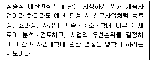
- 계획예산제도
- 영기준예산제도
- 복식예산제도
- 품목별
(정답률: 36%)
2과목: 도시설계 및 단지계획
21. 당해 구역의 중심기능에 따라 구분한 도시지역외 지역에 지정하는 지구단위계획구역의 유형 구분에 속하지 않는 것은?
- 주거형
- 산업유통형
- 관광휴양형
- 환경친화형
(정답률: 66%)
22. 영국의 계획도시 할로우(Haelow)에 관한 설명으로 옳지 않은 것은?
- 고밀도 개발을 원칙으로 하였다.
- 런던 주변에 개발된 초기 뉴타운의 대표적인 예이다.
- 주택지는 크게 4개의 그룹으로 나누어 그 내부에 근린주구를 배치하였다.
- 도시 내의 간선도로는 주택지 그룹 사이에 있는 녹지 속을 통과한다.
(정답률: 56%)
23. 페리(C, A, Perry)가 주장한 근린주구의 구성요소에 해당하지 않는 것은?
- 규모
- 랜드마크(landmark)
- 오픈스페이스(open space)
- 상업시설(shopping district)
(정답률: 42%)
24. 도시설계에 관하여 아래와 같이 주장한 미국의 사회학자는?
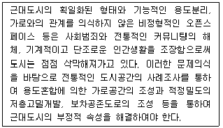
- Herbert
- Jane Jacobs
- Kevin Lynch
- Paul D.Spreiregen
(정답률: 50%)
25. 지구단위계획구역의 지정과 관련한 아래 내용에서 ()에 공통으로 들어갈 내용은?
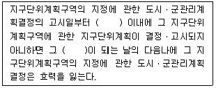
- 1년
- 3년
- 5년
- 7년
(정답률: 58%)
26. 지구단위계획에서 단독주택용지의 획지 및 가구계획 기준으로 옳지 않은 것은?
- 획지의 형상은 가능하면 동서방향으로의 긴 장방형으로 한다.
- 단독주택용 획지로 구성된 소가구 근린의식 형성이 용이하도록 10~24획지 내외로 구성하는 것이 좋다.
- 대가구의 규모는 어린이 놀이터 하나를 유지하는 거리로 반경 100~150m를 기준으로 한다.
- 보행자의 주동선 방향이 긴 가구로 단절되는 경우에는 보행자전용도로를 가구의 장방향과 직각으로 배치하여 보행자의 불편을 최소화한다.
(정답률: 62%)
27. 공동주택을 건설하는 주택단지의 총세대수가 2000세대 이상인 경우 기간도로와 접하거나 기간도로로부터 당해 단지에 이르는 진입도로의 폭은 최소 얼마 이상이어야 하는가? (단, 진입도로가 2개 이상인 경우는 고려하지 않는다.)
- 8m 이상
- 12m 이상
- 15m 이상
- 20m 이상
(정답률: 58%)
28. 슈퍼블럭을 구성함으로써 얻는 효과로 거리가 가장 먼 것은?
- 건물을 집약화함으로써 고층화 및 효율화에 기여한다.
- 충분한 공동의 오픈스페이스 확보가 가능하다.
- 보도와 차도의 완전한 통합을 통해 가구 내부로 통과 교통의 흐름을 원활하게 한다.
- 전력, 난방, 하수, 쓰레기 등 도시시설의 공동화가 용이하다.
(정답률: 65%)
29. 어린이공원의 규모 및 유치거리 기준이 옳은 것은?
- 1500m2 이상, 250m 이하
- 2000m2 이상, 250m 이하
- 2500m2 이상, 300m 이하
- 3000m2 이상, 300m 이하
(정답률: 64%)
30. 주거단지 내에서 차량의 감속을 유도하기 위하여 설치하는 것은?
- 험프(hump)
- 졸음쉼터
- 가드레일
- 도로 반사경
(정답률: 65%)
31. 지구단위계획에서 건축물의 배치와 관련하여 아래 설명에 해당하는 용어는?
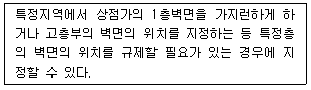
- 건축지정선
- 벽면지정선
- 건축한계선
- 벽면한계선
(정답률: 52%)
32. 1980년경 새롭게 등장한 뉴어바니즘의 주요 계획요소에 해당하지 않는 것은?
- 다양한 주택(Mixed-Housing)
- 보행성(Walkability)
- 연결성(Connectivity)
- 위요(Enclosure)
(정답률: 53%)
33. 지구단위계획수립지침상 경관상세계획을 수립하는 것을 원칙으로 하는 지역으로 옳지 않은 것은? (단, 광역도시계획ㆍ도시ㆍ군기본계획 또는 도시ㆍ군관리계획에서 경관상세계획을 수립 하도록 결정한 지역의 경우는 고려하지 않는다.)
- 수림대ㆍ구릉지ㆍ하천변 등 자연결관이 양호한 지역
- 고도지구 및 특정용도제한지구에 지정된 지구단위계획구역
- 전통적 건조물, 시대적 건축특성이 반영되어있는 건물군 등의 주변 지역
- 우수한 기후 및 지리적 조건을 갖은 시ㆍ군에 개발압력이 존재하고 있어 양호한 자연환경 및 경관의 보전이 필요한 지역
(정답률: 48%)
34. 공원ㆍ녹지 체계의 유형 중 일정 폭의 녹지를 직선으로 길게 띠모양으로 조성하는 것으로 완충녹지에서 많이 볼 수 있으며 인도의 찬디가르(Chandigarh)에서 볼 수 있는 유형은?
- 집중형
- 분산형
- 대상형
- 격자형
(정답률: 47%)
35. 지구단위계획구역 중에서 현상설계 등에 의하여 창의적 개발안을 받아들일 필요가 있거나 계획의 수립 및 실현에 상당한 기간이 걸릴 것으로 예상되어 충분한 시간을 가질 필요가 있을 때에 별도의 개발안을 만들어 지구단위계획으로 수용ㆍ결정하는 구역은?
- 인센티브구역
- 특별계획구역
- 우선개발구역
- 신속통합계획구역
(정답률: 66%)
36. 다음 중 저밀도 개발 대상지로 가장 바람직한 지역은?
- 평탄하고 도심지로의 접근로상에 위치한 고지가지역
- 주위에 상업시설이 밀집되어 있고 재개발이 추진되고 있는 지역
- 구릉지로서 자연경관과 지형이 어우러진 지역
- 역세권에 위치하여 대중교통의 연계성이 우수한 소규모 지역
(정답률: 64%)
37. 공동주택단지의 lost space 중, 주민접근이 제한되거나 이용시설이 설치되지 않아 공간이용에 어려움이 있는 유형은?
- 배타적 공간(anti space)
- 황량한 공간(prairie space)
- 소극적 공간(negative space)
- 애매한 공간(ambiguous space)
(정답률: 47%)
38. 주택건설기준 등에 관한 규정과 관련한 아래에서 ()에 공통으로 들어갈 알맞은 내용은?
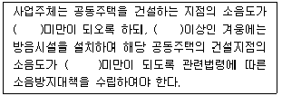
- 45dB
- 55dB
- 65dB
- 75dB
(정답률: 64%)
39. 다음 중 경관분석 방법에 해당하지 않는 것은?
- 기호화 방법
- 군락측도방법
- 사진에 의한 방법
- 메쉬(mesh)에 의한 방법
(정답률: 50%)
40. 도로의 규모별 구분에 따라 다음 중 중로에 속하지 않는 것은?
- 폭 12m
- 폭 15m
- 폭 20m
- 폭 30m
(정답률: 62%)
3과목: 도시개발론
41. 인구가 10만 명인 도시에서 다음 조건에 맞게 산출한 상업지역의 소요 면적은?
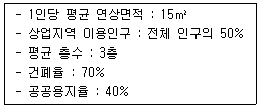
- 21.4ha
- 35.7ha
- 59.5ha
- 262.5ha
(정답률: 63%)
42. 다음 설명에 해당하는 도시개발기법은?
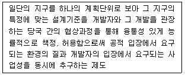
- 마찌쯔쿠리
- 개발권양도제(TDR)
- 계획단위개발(PUD)
- ABC정책
(정답률: 60%)
43. 부동산 투자의 유형 중 자본의 성격은 자본투자(equity financing)이면서 운용시장의 형태가 공개시장(public market)에 해당하는 것은?
- 사모부동산펀드
- 부동산투자회사
- 상업용저당채권
- 직접대출
(정답률: 58%)
44. 공사 진행속도가 공정표 상의 일정보다 지연될 위험인 ‘공사완공 지연위험’의 관리방안으로 거리가 가장 먼 것은?
- 설계 및 설계변경 관리
- 우수시공사와 책임시공에 대한 협약
- CM(construction management)사 선정 및 관리
- 공사완공보험 가입 및 공사 지연 시 지체보상금 부과
(정답률: 38%)
45. 공공(公共)이 도시개발 과정에 개입하는 다양한 형태에 대한 설명으로 옳지 않은 것은?
- 각종 토지이용규제를 통하여 도시개발을 제어한다.
- 조세정책이 아닌 금융정책을 통해서만 도시개발을 촉진시키거나 지연시키는 효과를 갖는다.
- 개발업자 등의 자격을 제한하는 시장진입 규제, 토지 등의 거래행위에 대한 규제, 각종 부담금 등을 통해 개발이익 분배 과정에 개입한다.
- 공부(公簿) 등을 통해 토지나 건물에 대한 권리관계를 확인하고 보장해 주는 역할을 담당한다.
(정답률: 53%)
46. Calthorpe가 제안한 대중교통중심개발(TOD)의 개발 주요 원칙으로 옳은 것은?
- 대중교통 중심지의 효율적 토지이용을 위해 녹지와 오픈스페이스를 최소화 한다.
- 토지이용의 용도 복합을 통해 다양한 시설이 혼합되도록 배치한다.
- 지역내 목적지 간에는 자가용 이동 위주의 보행 공간을 구축한다.
- 대중교통 중심지는 저밀ㆍ분산개발을 지향한다.
(정답률: 59%)
47. 재건축사업을 위한 정비계획 입안 대상 지역기준에 해당하지 않는 것은? (단, 시ㆍ도 조례로 정하는 사항은 고려하지 않는다.)
- 재해 등이 발생할 경우 위해의 우려가 있어 신속한 정비사업을 추진할 필요가 있는 지역
- 건축물의 일부가 멸실되어 붕괴나 그 밖의 안전사고의 우려가 있는 지역
- 노후ㆍ불량건축물의 기존 세대수가 100세대 이상인 지역
- 노후ㆍ불량 건축물의 부지 면적이 1만m2 이상인 지역
(정답률: 41%)
48. 그림과 같은 거리와 지대/밀도의 관계 그래프에서 도시용 토지와 농업 등의 생산용도로 이용하고자 하는 토지로 나누어지는 지점은? (단, Ra는 농업지대곡선, Rr는 주거지대곡선, Rc는 상업ㆍ업무 지대곡선이다.)
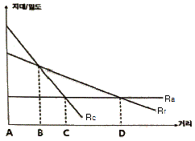
- A
- B
- C
- D
(정답률: 43%)
49. 개발사업의 실행(사업성) 평가를 위해 사용되는 경제적 타당성 분석의 지표가 아닌 것은?
- 순현재가치(NPV)
- B/C 비
- 내부수익률(IRR)
- 승수효과
(정답률: 63%)
50. 해외 텔레포트와 그 유형의 연결이 틀린 것은?
- 일본 동경 - 임해부 부도심의 기반구조형
- 미국 뉴욕 - 정보통신 관련 산업단지형
- 미국 Bay Area - 해안 관광도시형
- 영국 런던 - 도시재개발형
(정답률: 37%)
51. 도시개발법령상 도시개발구역으로 지정할 수 있는 대상 지역 및 규모 기준의 연결이 옳지 않은 것은?
- 도시지역 내 주거지역 : 1만 m2 이상
- 도시지역 내 상업지역 : 3만 m2 이상
- 도시지역 내 공업지역 : 3만 m2 이상
- 도시지역 내 자연녹지지역 : 1만 m2 이상
(정답률: 58%)
52. 공공기관 지방이전을 계기로 성장 거점지역에 조성되는 미래형 도시로, 이전된 공공기관과 지역의 대학ㆍ연구소ㆍ산업체ㆍ지방자치단체가 협력하여 새로운 성장 동력을 창출하는 기반이 될 것으로 기대하는 것은?
- 행복도시
- 혁신도시
- 기업도시
- 뉴타운
(정답률: 68%)
53. 사업 시행자가 정비구역의 안과 밖에 새로 건설한 주택 또는 이미 건설되어 있는 주택을 이용하여 정비사업의 시행으로 철거되는 주택의 소유자 또는 세입자를 임시로 거주하게 하는 등 그 정비구역을 순차적으로 정비하여 주택의 소유자 또는 세입자의 이주대책을 수립하는 정비사업의 시행방식은?
- 합동정비방식
- 자력정비방식
- 위탁정비방식
- 순환정비방식
(정답률: 56%)
54. 우리나라 도시개발 제도의 역사에서 서울시의 경우 강북과 강남의 상대적 격차를 줄이고 강북의 쇠퇴한 주거지 정비를 통해 강북 시민의 삶의 질 향상과 도시기반시설 정비를 통해 서울시 내부의 균형발전 차원에서 추진된 사업은?
- 뉴타운사업
- 도시선도사업
- 혁신도시사업
- 스마트도시사업
(정답률: 54%)
55. 부동산신탁의 종류 중 임대형 토지신탁과 분양형 토지신탁이 속하는 종류는?
- 관리형 신탁
- 운용형 신탁
- 처분형 신탁
- 관리ㆍ처분형 신탁
(정답률: 47%)
56. 부동산개발금융의 재원 조달 방식 중 지분조달방식과 비교하여 부채조달방식이 갖는 단점에 해당하는 것은?
- 원리금의 상환부담이 있다.
- 자본시장의 여건에 따라 조달이 민감한 영향을 받는다.
- 중소기업의 경우 주식공개매매, 유통시장이 발달되지 않는다.
- 조달 규모가 증가하면 소유주의 지분 축소가 불가피하다.
(정답률: 47%)
57. 부동산 시장 및 각종 생산과 설비를 위한 투자의 경우에도 널리 사용되는 개념으로, 기업의 부채에 대한 이자가 영업 이익의 변동 세후 순이익의 변동을 확대시키는 현상은?
- 승수효과
- 꾸르노효과
- 파레토효과
- 레버리지효과
(정답률: 62%)
58. 부동산금융에 관한 설명 중 틀린 것은?
- 부동산금융은 기간을 기준으로 단기금융과 장기금융으로 구분할 수 있다.
- 부동산금융은 단기금융과 타인자본이 가장 큰 비중을 차지한다.
- 개발단계에서는 사업의 총비용과 개발에 따른 수익성을 가장 중요시하므로 주로 부동산투자회사, 연기금과 같은 장기 투자자 및 대출자가 많다.
- 관리운용단계에서는 개발된 부동산의 임대나 매각 등과 관련한 사업 자체의 수익성이 중요한 고려요소이다.
(정답률: 42%)
59. ㉠, ㉡에 들어갈 내용이 모두 옳은 것은?
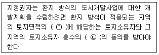
- ㉠ 3분의 2 이상 ㉡ 3분의 2 이상
- ㉠ 3분의 2 이상 ㉡ 2분의 1 이상
- ㉠ 2분의 1 이상 ㉡ 2분의 1 이상
- ㉠ 2분의 1 이상 ㉡ 3분의 2 이상
(정답률: 67%)
60. 관광진흥법령에 따른 권역별 관광개발계획의 수립주기 기준으로 옳은 것은?
- 3년
- 5년
- 7년
- 10년
(정답률: 58%)
4과목: 국토 및 지역계획
61. North의 경제기반이론(economic base theory)에 따라 다음 중 다른 셋과 구별되는 부문은?
- 수출부문(export sector)
- 비기반부문(non-basic sector)
- 지방부문(local sector)
- 서비스부문(service sector)
(정답률: 36%)
62. 다음 중 Boudeville의 지역유형 분류에 근거한 결절지역에 해당하지 않는 것은?
- 캐나다의 센서스 대도시권(CMA)
- 레일리(W.Relly)의 도시세력권
- 클라센(L. Klaassen)의 저개발지역
- 미국의 표준대도시통계지역(SMSA)
(정답률: 44%)
63. 아래의 설명에 해당하는 기구는?
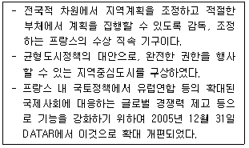
- DLACT
- CNAT
- CAR
- CODER
(정답률: 47%)
64. 콥-더글라스(Cobb-Douglas)의 생산함수에 관한 설명 중 ()안에 알맞은 것은?
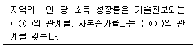
- ㉠ 정(正), ㉡ 부(負)
- ㉠ 부(負), ㉡ 정(正)
- ㉠ 정(正), ㉡ 정(正)
- ㉠ 부(負), ㉡ 부(負)
(정답률: 47%)
65. 다음 중 하향식 지역개발전략에 가장 적합한 것은?
- 기본수요접근
- 거점 중심 개발
- 일반 주민 주도 개발
- 소단위지역 단위 개발
(정답률: 52%)
66. 계획이란 ‘선택을 통해 가장 적절한 미래의 행위를 결정하는 일련의 절차’라고 정의한 학자는?
- C.A Perry
- Davidoff와 Reiner
- E. Howard
- Le Corbusier
(정답률: 42%)
67. 크리스탈러가 주장한 중심지이론의 기본 가정이 아닌 것은?
- 지리적 공간은 자원 미 인구분산이 균등하게 분포되어 있는 평면공간이다.
- 평면 상 서비스를 공급받지 못하는 지역이 있다.
- 생산자와 소비자는 시장에 대한 완전한 지식을 갖고 있으며 합리적인 의사결정을 내리는 자다.
- 수송비는 거리에 비례한다.
(정답률: 54%)
68. 국토를 친환경적ㆍ계획적으로 보전하고 이용하기 위하여 환경적 가치를 종합적으로 평가하여 환경적 중요도에 따라 5개 등급으로 구분하고 색채를 달리 표시하여 알기 쉽게 작성한 것으로, 환경정책기본법을 근거로 작성 및 보급되는 지도는?
- 비오톱지도
- 생태ㆍ자연도
- 토지적성평가도
- 국토환경성평가지도
(정답률: 49%)
69. 다음 중 개발도상국에서의 지역 간 인구 이동, 요인으로 가장 설득력이 적은 것은?
- 취업기회의 차이
- 문화적 욕구 충족의 차이
- 교육 수준과 기회의 차이
- 소득과 임금의 지역 간 격차
(정답률: 59%)
70. A시의 수출산업(기반활동) 종사자수는 5만명, 비기반활동 종사자수가 10만 명이다. A시의 수출산업(기반활동) 종사자수가 1명 증가할 때, 총 고용자수는 얼마나 증가하는가?
- 0.5명
- 2명
- 3명
- 4명
(정답률: 48%)
71. 아래와 같은 조건에서 A시의 IT산업 입지계수(LQ : Location Quotient)는?
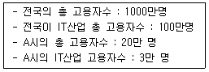
- 0.67
- 1
- 1.5
- 2
(정답률: 54%)
72. 국토의 계획 및 이용에 관한 법률상 용도구역에 해당하지 않는 것은?
- 개발제한구역
- 국토자연구역
- 수산자원보호구역
- 입지규제최소구역
(정답률: 54%)
73. 1930년대와 1940년대 초 자연자원 중심의 대표적 지역계획인 테네시계곡, 개발계획(TVA)이 이루어진 곳은?
- 미국
- 영국
- 독일
- 이탈리아
(정답률: 66%)
74. 고용 또는 소득의 극대화나 지역개발의 극대화 등 정책적 목적을 가장 효과적인 방법으로 달성케 하는 연속적 공간으로 계획의 필요에 따라 인위적으로 설정된 지역은?
- 결절지역
- 계획지역
- 동질지역
- 분극지역
(정답률: 47%)
75. 퍼로우(F. Perroux)가 제시한 성장극(growth pole)의 특성으로 옳지 않은 것은?
- 성장극은 전체산업의 평균성장률보다 빠른 성장속도를 갖는다.
- 성장극은 자체의 성장을 유도하고 성장을 다른 곳으로 확산시킨다.
- 성장극은 경제적 지배력을 가질 수 있을 만큼 충분히 큰 규모를 갖는다.
- 성장극은 독립성이 강하여 다른 산업과의 연계성이 매우 낮다.
(정답률: 61%)
76. P. Cooke(1992)가 제안한 개념으로 “제품ㆍ공정ㆍ지식의 상업화를 촉진하는 기업과 제도들의 네트워크”라고 정의한 대안적 지역개발이론에 가장 가까운 것은?
- 혁신환경론
- 신산업공간론
- 클러스터이론
- 지역혁신체제론
(정답률: 40%)
77. 우리나라 국토계획의 목적과 가장 거리가 먼 것은?
- 도시지역과 농촌지역이 유기적인 관계를 맺으며 균형있게 발전하게 한다.
- 1ㆍ2ㆍ3차 산업이 발전할 수 있도록 모든 산업을 조화있게 배치한다.
- 국민이 보다 안전하고 풍요한 생활을 누릴 수 있도록 국토구조와 환경을 개선한다.
- 노동조건의 개선, 농촌의 기계화로 노동시간을 단축한다.
(정답률: 52%)
78. 기준년도의 인구와 출생율, 사망율 및 인구이동의 변화요인을 고려하여 장래의 인구를 추정하는 방법은?
- 비율적용법(ratio method)
- 선형모형(linear growth model)
- 집단생잔법(cohort survival method)
- 로지스틱커브법(logistic curve method)
(정답률: 63%)
79. 수도권으로의 인구집중, 수도권의 과밀ㆍ과대화를 억제하기 위한 방법으로 옳지 않은 것은?
- 수도권 내 고등 교육기관의 증설
- 수도권 소재 공공기관의 지방 이전
- 수도권 내 공장의 신ㆍ증설 억제
- 수도권 외 지역의 거점 도시 육성
(정답률: 63%)
80. 국토의 다핵화를 위하여 대전 및 광주 등 제1차 성장거점과 청주, 춘천, 전주 등 제2차 성장거점을 제시하고 전국을 28개의 지역 생활권으로 나누어 생활권의 성격과 규모에 따라 5개의 대도시생활권, 17개의 지방도시 생활권, 6개의 농촌도시생활권으로 구분하였던 계획은?
- 제1차국토종합개발계획
- 제2차국토종합개발계획
- 제3차국토종합개발계획
- 제4차국토종합계획
(정답률: 61%)
5과목: 도시계획관계법규
81. 개발제한구역관리계획의 수립과 관련한 아래 내용에서 ()에 들어갈 내용으로 옳은 것은?
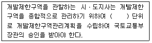
- 3년
- 5년
- 7년
- 10년
(정답률: 52%)
82. 도시개발법상 원칙적으로 도시개발구역을 지정할 수 없는 자는?
- 구청장
- 도지사
- 광역시장
- 특별시장
(정답률: 50%)
83. 건축법령상 용도별 건축물의 종류 구분에 따른 문화 및 집회시설에 해당하지 않는 것은?
- 전시장
- 수족관
- 독서실
- 공연장(제2종 근린생활시설에 해당하지 아니하는 것)
(정답률: 61%)
84. 수도권정비계획법령상 과밀부담금에 대한 설명으로 옳은 것은?
- 부담금은 건축비의 100분의 20으로 한다.
- 부담금은 지역별 여건 등에 따라 건축비의 100분의 10까지 조정할 수 있다.
- 건축물 중 주차장의 용도로 사용되는 건축물에 대해 부담금을 감면할 수 없다.
- 부담금은 부과 대상 건축물이 속한 지역을 관할하는 시ㆍ도지사가 부과ㆍ징수한다.
(정답률: 54%)
85. 다음 중 건폐율에 관한 내용이 틀린 것은?
- 건폐율이란 대지면적에 대한 건축면적의 비율이다.
- 도시지역 내 주거지역의 건폐율 최대한도는 70% 이하이다.
- 관리지역 내 보전관리지역의 건폐율 최대한도는 10% 이하이다.
- 농림지역의 건폐율 최대한도는 20% 이하이다.
(정답률: 46%)
86. 주택법령상 아래의 정의에 해당하는 용어는?
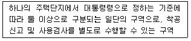
- 가구
- 공구
- 특구
- 환구
(정답률: 52%)
87. 도시 및 주거환경정비법령상 도시ㆍ주거환경정비기본계획의 수립 과정에 관한 아래 내용의 밑줄 친 내용 중 옳지 않은 것은?
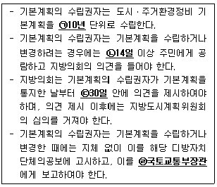
- ㉠
- ㉡
- ㉢
- ㉣
(정답률: 45%)
88. 주차장법령상 주차장의 주차단위구획 설치기준에 대한 설명으로 옳지 않은 것은?
- 경형자동차 전용주차구획의 주차단위구획은 파란색 실선으로 표시하여야 한다.
- 평행주차형식 외이고 장애인전용인 경우 주차단위구획의 길이는 5미터 이상이다.
- 평행주차형식 외이고 장애인전용인 경우, 주차구획의 너비는 3.3미터 이상이다.
- 평행주차형식이고 일반형인 경우, 주차단위구획의 길이는 6.5미터 이상이다.
(정답률: 54%)
89. 도시ㆍ군계획시설로서 하천에 해당하지 않는 것은?
- 국가하천
- 지방하천
- 운하
- 유수지
(정답률: 35%)
90. 국토의 계획 및 이용에 관한 법령상 다음 중 공동구의 원칙적인 관리자는? (단, 대통령령으로 관리ㆍ운영을 위탁하는 기관의 경우는 고려하지 않는다.)
- 구청장
- 시장 또는 군수
- 행정안전부장관
- 시설관리공단장
(정답률: 61%)
91. 건축법령상 건축면적에 대한 설명으로 옳은 것은?
- 건축물 지상층에 일반인이나 통행할 수 있도록 설치한 보행통로는 건축면적에 산입한다.
- 건축물 외벽의 바깥 부분 외곽선으로 둘러싸인 부분의 수평투영면적을 말한다.
- 지표면으로부터 1m 이하에 있는 부분은 건축면적에 산입한다.
- 건축물의 외벽이 없는 경우 외곽 부분의 기둥을 건축물의 외벽으로 본다.
(정답률: 46%)
92. 도시개발법령상 도시개발사업 시행자가 청산금을 징수ㆍ교부하여야 하는 원칙적인 시기 기준은? (단, 환지를 정하지 아니하는 토지에 대한 경우는 고려하지 않는다.)
- 환지설계 후
- 환지계획 후
- 환지처분 공고 후
- 환지예정지 지정 후
(정답률: 66%)
93. 도시개발사업의 시행자가 될 수 있는 대통령령으로 정하는 공공기관에 해당하지 않는 것은? (단, 혁신도시 조성 및 발전에 관한 특별법에 따른 매입공공기관의 경우는 고려하지 않는다.)
- 한국자산관리공사
- 한국관광공사
- 한국농어촌공사
- 한국수자원공사
(정답률: 55%)
94. 주택법령상 주택조합의 구분에 해당하지 않는 것은?
- 지역주택조합
- 직장주택조합
- 특수주택조합
- 리모델링주택조합
(정답률: 35%)
95. 체육시설의 설치ㆍ이용에 관한 법령상 공공체육시설의 구분에 해당하지 않는 것은?
- 전문체육시설
- 재활체육시설
- 직장체육시설
- 생활체육시설
(정답률: 40%)
96. 수도권정비계획법령상 수도권정비 실무위원회의 위원장은?
- 국무총리
- 경기도지사
- 서울특별시장
- 국토교통부 제1차관
(정답률: 53%)
97. 주차장법령상 노상주차장의 원칙적인 설치권자가 아닌 자는?
- 군수
- 구청장
- 특별시장
- 시설관리공단장
(정답률: 54%)
98. 국토의 계획 및 이용에 관한 법령상 공동주택중심의 양호한 주거환경을 보호하기 위하여 세분하여 지정하는 용도지역은?
- 제1종 전용주거지역
- 제2종 전용주거지역
- 제1종 일반주거지역
- 제2종 일반주거지역
(정답률: 48%)
99. 국토의 계획 및 이용에 관한 법령상 ‘기반시설’에 속하지 않는 것은?
- 광장ㆍ공원ㆍ녹지 등 공간시설
- 도로ㆍ철도ㆍ항만ㆍ공항 등 교통시설
- 하수도ㆍ폐기물처리시설 등 환경기초시설
- 아파트ㆍ연립주택ㆍ다세대주택 등 주거시설
(정답률: 57%)
100. 국토기본법령상 환경친화적 국토관리의 내용으로 가장 거리가 먼 것은?
- 국토에 관한 계획 또는 사업을 수립ㆍ집행할 때에는 자연환경과 생활환경에 미치는 영향을 사전에 검토함으로써 환경에 미치는 부정적인 영향을 최소화하고 환경정의가 실현 될 수 있도록 하여야 한다.
- 국토의 무질서한 개발을 방지하고 국민 생활에 필요한 토지를 원활하게 공급하기 위하여 토지이용에 관한 종합적인 계획을 수립하고 이에 따라 국토 공간을 체계적으로 관리하여야 한다.
- 지역 간 경쟁을 통하여 지리적 특성을 살려 국가 경쟁력을 강화할 수 있는 기간 시설의 설치를 확대하여 국토 정주 여건을 관리하여야 한다.
- 자연생태계를 통합적으로 관리ㆍ보전하고 훼손된 자연생태계를 복원하기 위한 종합적인 시책을 추진함으로써 인간이 자연과 더불어 살 수 있는 쾌적한 국토 환경을 조성하여야 한다.
(정답률: 64%)